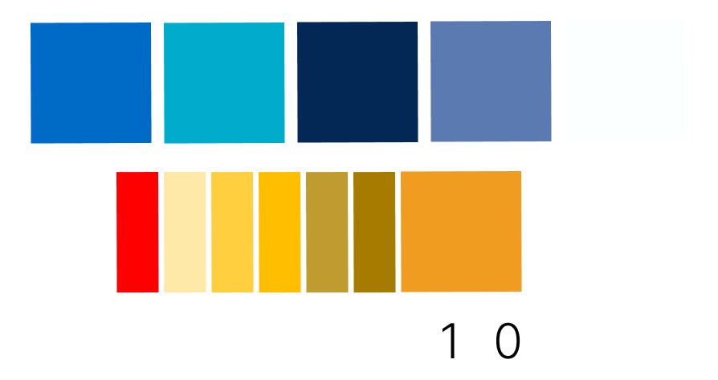

STARFOX SQUADRON
Visit Live Site →
Project Overview
Star Squadron is an interactive JavaScript game inspired by the classic Nintendo game StarFox. This project showcases my skills in front-end web development, game design, and interactive user experiences. The game combines character selection, a rock-paper-scissors gameplay mechanic, and space-themed visuals to create an engaging and nostalgic gaming experience.
As the sole developer of this project, I was responsible for conceptualizing the game, designing the user interface, implementing the game logic, and creating the visual assets. Star Academy demonstrates my ability to create complex, interactive web applications while paying homage to classic video game.
The game features multiple playable characters, each with unique attributes, and a challenging AI opponent. Players must use strategy and quick thinking to outmaneuver their opponent in a series of rock-paper-scissors battles set against a dynamic space backdrop.

User Research & Competitor Analysis
While Star Academy is a personal project inspired by classic games, I still conducted research to ensure the game would be enjoyable and accessible to a wide audience.
User Research Findings
- Users enjoy games that blend nostalgia with modern gameplay elements
- Simple, easy-to-understand rules with strategic depth are appealing
- Character selection and customization enhance player engagement
- Browser-based games should be quick to load and easy to play without installation
Competitor Analysis:
- Classic Rock-Paper-Scissors games: Often too simple, lacking depth and replayability
- Browser-based space shooters: Can be complex and require significant load times
- Retro game emulators: Legal issues and lack of modern features
- Mobile casual games: Often rely on microtransactions, which can be off-putting
Based on these insights, I aimed to create a game that combines the simplicity of rock-paper-scissors with the excitement of space combat and character selection, all in an easily accessible browser-based format.

UX/UI Design Process
The design process for Star Academy focused on creating an intuitive and visually appealing game interface that captures the essence of classic space combat games while offering a unique gameplay experience.
- Concept Sketching: Created initial sketches of the game layout, character designs, and UI elements.
- Wireframing: Developed low-fidelity wireframes to establish the basic layout of the game screens.
- Visual Design: Created a cohesive visual style inspired by retro space games, with a modern twist.
- Character Design: Designed unique characters with distinct visual styles and attributes.
- UI Elements: Crafted intuitive UI components for character selection, game controls, and score display.
- Animations: Implemented subtle animations to enhance the game feel and provide visual feedback.
- Playtesting: Conducted multiple rounds of playtesting to refine gameplay and identify usability issues.
- Iteration: Continuously refined the design based on player feedback and personal insights.
Pilot Select Screen
Initial
Final
Key Features
- Character Selection: Choose from multiple unique characters, each with their own strengths and weaknesses
- Rock-Paper-Scissors Gameplay: Strategic battles based on the classic game mechanic
- Space Combat Theme: Engaging visuals and animations that bring the space setting to life
- AI Opponent: Challenging computer-controlled opponent with adaptive difficulty
- Score Tracking: Keep track of wins, losses, and ties across multiple games
- Responsive Design: Playable on both desktop and mobile devices
- Sound Effects: Immersive audio cues for actions and outcomes
- Tutorial: Built-in instructions to help new players understand the game mechanics
Design Considerations
Color Palette
The color scheme was chosen to evoke a futuristic space atmosphere while ensuring good contrast and readability:
- Primary Color: Deep Space Blue (#1a2a6c) - represents the vastness of space
- Secondary Color: Cosmic Purple (#7303c0) - adds a touch of mystery and excitement
- Accent Color: Neon Green (#38ef7d) - used for highlights and important UI elements
- Background: Dark Gray (#222222) - provides a neutral backdrop for game elements
- Text: White (#ffffff) - ensures high contrast and readability
Typography
- Main Font: 'Press Start 2P' - A pixelated font that captures the retro game aesthetic
- Secondary Font: 'Orbitron' - A futuristic sans-serif font for UI elements and instructions
Icons & Favicon
- Game Icons: Custom-designed pixel art icons for rock, paper, and scissors actions
- Character Icons: Unique pixel art portraits for each playable character
- Favicon: Miniature spaceship design that represents the game's theme
Design Assets
Typography
Colour Palette
Game UI Elements
Pilot Selection

Pilot selection background
Final Thoughts
Developing The Word Events App was a challenging yet rewarding experience that allowed me to showcase my full-stack development skills. This project demonstrates my ability to create a complex, user-centered web application from conception to deployment.
Key takeaways from this project include:
- Primary Color: Vibrant Purple (#8A4FFF) - represents creativity and innovation
- Secondary Color: Coral Orange (#FF7F50) - adds warmth and encourages action
- Background: Light Gray (#F8F9FA) - ensures content stands out and reduces eye strain
- Text: Dark Gray (#333333) - provides strong contrast for improved readability
- Accent: Teal (#20B2AA) - used sparingly for highlights and calls-to-action
Typography
- The importance of thorough user research and competitor analysis in shaping product direction
- The value of iterative design and continuous user feedback in creating an intuitive interface
- The challenges and solutions involved in building a scalable backend with Django
- The significance of responsive design in providing a seamless cross-device experience
- The power of community features in increasing user engagement and retention
Moving forward, I plan to continue enhancing The Word with new features and optimizations based on user feedback and emerging technologies in the event management space.